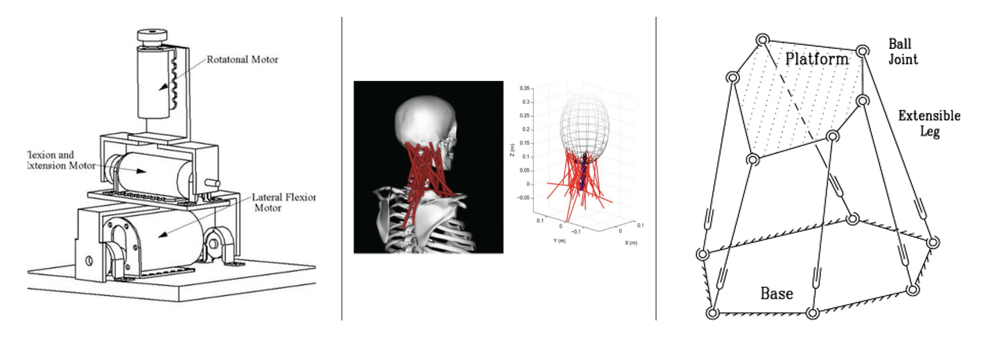
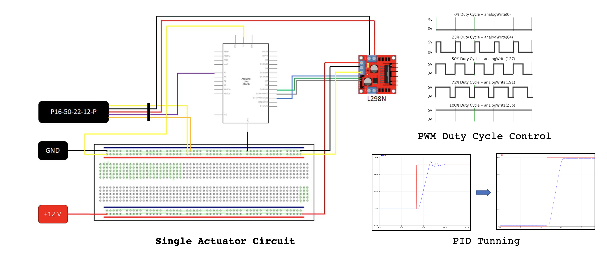
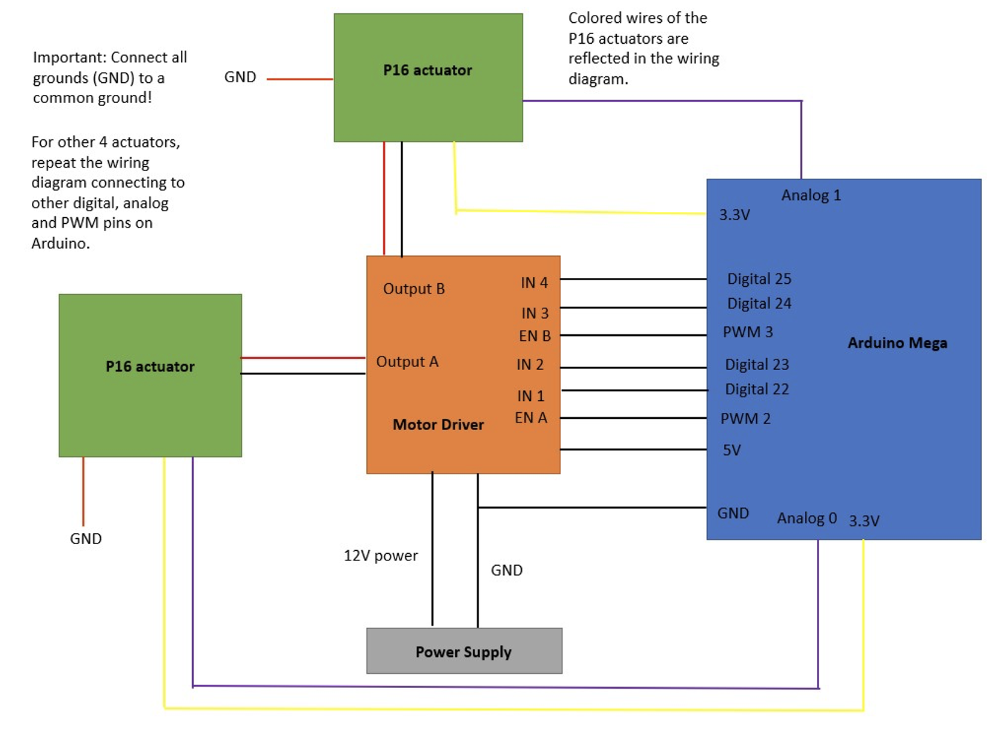
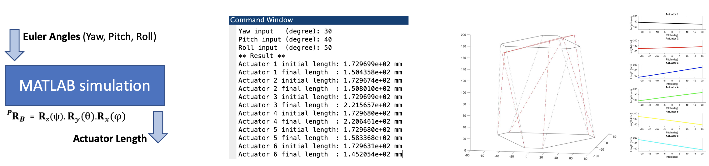
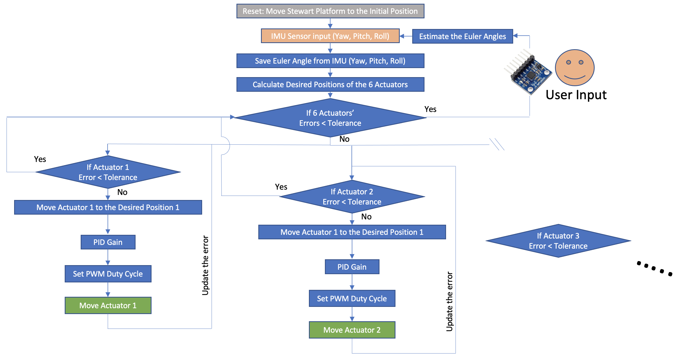

The research project in the Georgia Tech LIDAR (Laboratory for Intelligent Decision and Autonomous Robots) proposes to make a robot called Athena that mimics human behavior and achieves human-level agility. The team had been working on Athena’s upper body and needed a neck platform that connects the upper body and the head (pictures above).
Most robots’ neck platforms consisted of 3 to 4 degrees of freedom serial manipulators (figure 1, left). However, the human’s neck has a more complicated kinematic aspect - 24 degrees of freedom and 8 links (figure 1, middle). In order to make neck movement that is more similar to humans, it was decided that the manipulating structure that uses 6 degrees of freedom Stewart platform was suitable for the humanoid neck movement (figure 1, right).
The Stewart platform was modeled in Computer-Aided Design (CAD) using SolidWorks, allowing it to be connected to other parts of Athena. The design was based on the existing design of the traditional Stewart platform and simplified for easier and quicker manufacturing, i.e., Additive Manufacturing (AM).
Six pairs of 2DOF universal joints were used to connect the P16 actuators (Actuonix P16-50-22- 12-P) and the plates were tilted/moved by 6 actuators manipulations. By Using Arduino MEGA, L298N H-Bridge Motor Driver, and 12v constant voltage power supply, ±12V of square wave current’s duty cycle was controlled by using the potentiometer feedback (potentiometer signal represented actuator's position) from the P16 actuator. Furthermore, the circuit for the single actuator's position control was designed as shown in figure 2. Through MATLAB's System ID and the PID response experiment of the P16 actuator, suitable PID gains that satisfied the response constraints were found.
To control 6 actuators simultaneously, the same method as controlling 1 actuator was used (figure 3). Each L298N H-Bridge Motor Driver adjusted the PWM value of the actuator according to the duty cycle provided by Arduino, and as a result, the actuators' speeds were changed with respect to time. As a result, each actuator could be reached the desire position in a given time domain.
The dynamic simulation (yaw, pitch, and roll motions) of the Stewart Platform was performed using MATLAB and Simulink. By conducting inverse and forward kinematics, each actuators’ position (the distance from one universal joint to the other) was calculated with respect to the desired Euler angle (yaw, pitch, and roll) using MATLAB.
As shown in figure 4, simulation was designed to calculate the length of each actuator by inputting an arbitrary Euler angle as an input value. The calculation method was later used to calculate the actuator position in the Arduino control of the Stewart Platform.
In order to synchronize 6 actuators, the algorithm shown in figure 5 was used. The two important points are that (1) the main loop was terminated when 6 actuators successfully reach the desired position, and (2) in one iteration of the main loop, each actuator estimated an error and provided a PWM signal, and the iteration was increased until the main loop satisfy the given condition.
For the user to directly control the Stewart Platform, an IMU called MPU6050 provided an Euler angle to the Stewart Platform. By tilting the IMU, the user could tilt and move the platform as they wanted. The code that allows the user to control the platform using an IMU was developed, and it allowed for more direct control of the platform by the user.
The algorithm starts with the user input. After the user gives Euler angle as an input, the function calculates the actuators’ positions (same method as MATLAB simulation) that were used for the desire position of the PID control. The duty cycle determined by the Arduino changes according to the size of the error. For instance, the duty cycle was decreased as the value of the error decreased and vice versa. The L298N H-Bridge Motor Driver provided suitable PWM signals to the actuators. The loop continued to run until the error of 6 actuators was within the given error range (4mm).
Figure 6 shows the process of controlling the Stewart Platform. Figures 6.4 and 6.5 show the final results of the project.
2DOF universal joints did not provide enough flexibility because of the friction occurring from the other actuators; therefore, joints with 3DOF may increase the flexibility of the platform. In addition, poor circuit connection changed the direction of the current and caused unpredictable problems in the overall motion of the Stewart Platform. Because only breadboard and wire were used for the circuit design, this problem can be solved by soldering wires and using the PCB board instead of the breadboard. Precision and accuracy of the movement of the Stewart Platform can be improved through the measurement of the angles. Lastly, the Stewart Platform needs to be integrated with Athena's eyes and body.